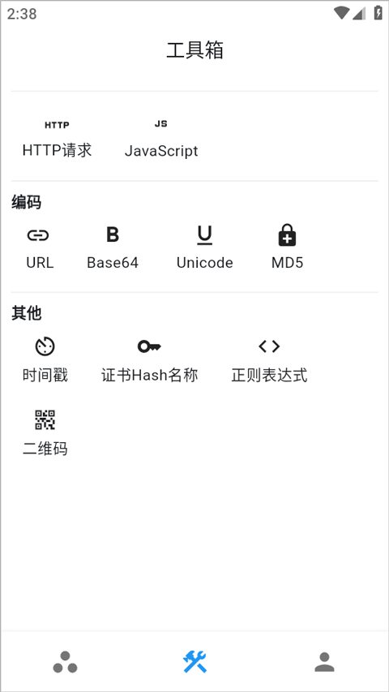

用 ProxyPin 一年半，从第一次装到现在没卸载过
从桌面端抓包到 Flutter 绕过证书固定，从 HAR 导入到脚本钩子，ProxyPin 一路从"装来试试"变成了每天都开的调试工具。说一些长期用下来才看得出的细节。
装 ProxyPin 到现在快一年半了。最早是朋友在一个调试群里甩了个链接，说"这个比 Charles 轻，而且 Android 端直接装一个 APK 就能用"。那时候我还在用 Charles，被它那笨重的界面和每次连接都要重新配置证书烦得不行。没多想就从官方下载拿了 APK，结果一用就是到今天。
当初为什么装它
那段时间我在调一个 Android App 的接口，需要同时抓桌面浏览器和手机上的请求。Charles 在桌面端还好，但手机那边每次换个 Wi-Fi 就得重新导出证书、重新信任，Android 7.0+ 还得把证书移动到系统目录，root 又麻烦。ProxyPin的官网上介绍它走 VPN Service 拦截流量，APK 一装、VPN 一授权就能用，理论上比 Charles 那套 HTTPS 代理方案简单得多。
抱着试试的心态装上的，说实话当时没抱太高期望——社区里这种小体量开源工具太多了，大多是 Demo 级的玩具。
哪点越用越顺手
最大的变化是"它越来越像我的一部分"。
桌面端和手机端扫码连接这个设计，我第一次用时觉得有点花哨——不就是在同一个局域网下扫个码吗，至于做成个功能？后来才发现这一步解决了大部分代理工具最烦的配置问题：不需要手动填端口、不需要手动导证书、不需要在手机 Wi-Fi 设置里改代理。扫一下，两边就通了。

然后是 Flutter 应用的绕过证书固定。说个反直觉的——我以为这个功能我永远用不上。Flutter 那套 Dart HttpClient 自带证书验证，常规代理抓不到，网上的教程都是 Frida + Objection 或者 Xposed 模块那种重武器。结果有次项目里 App 就是 Flutter 写的，我抱着试试看的心态开了 ProxyPin，结果真就抓到了明文 JSON。不需要改 App 源码、不需要 Hook 脚本、甚至不需要 root。这件事之后我对 ProxyPin 的定位就从"一个还行的抓包工具"变成了"解决实际问题的工具"。
哪点越用越烦
有两个地方是长期用下来才慢慢觉得别扭的。
一个是 Android 7.0+ 的证书限制——这个不是 ProxyPin 的问题，是 Android 的系统策略。但每次遇到新设备或者非 root 场景，还是得手动折腾证书信任。有些 App 不信任用户证书，ProxyPin 有 Flutter 的绕过逻辑，但普通原生 App 遇到 SSL Pinning 还是得靠别的手段。这个坎目前没绕过去。
另一个是脚本引擎的调试。onRequest 和 onResponse 钩子功能很强大，但脚本出错时的反馈不够友好——ProxyPin 控制台只打个错误堆栈，不会告诉你是哪一行变量没定义、还是哪个 API 用错了。一开始写脚本踩坑踩得挺频繁，后来习惯了先在浏览器控制台里把逻辑跑通再搬过来，就好多了。但总觉得这里应该有个更好的调试体验。
哪个功能成了每天离不开的
HAR 导入重放。
我之前低估了这个功能的价值——觉得就是导入个文件看看，跟自己抓有什么区别？后来团队协作多了才发现，同事发来一个 HAR 文件，里面可能包含了我这边环境复现不出来的 Bug 场景。导入 ProxyPin 后可以直接重放那条请求，改个参数再发一次，看服务端返回什么。这个流程帮我省了无数次"我这边复现不出来"的来回沟通。
而且 ProxyPin 导出的 HAR 跟 Chrome、Charles 那些工具完全兼容，反过来 Chrome DevTools 也能导入 ProxyPin 导出的 HAR 做瀑布图分析。跨工具打通这一点挺少见的。这些细节在ProxyPin的中文文档里都能查到。
哪个碰都没再碰
App 重写功能。就是那种把某个域名的请求全部重定向到另一个地址，或者把某个路径的请求替换成本地 Mock 数据。理论上这个功能挺香的，但实际工作里我更多时候用脚本钩子直接改请求参数，或者干脆用代理切后端环境。重写那套规则配置起来太笨重，优先级在我这里排得很靠后。
当然这只是我的个人场景，如果是做前端 Mock 或者灰度环境切换的同事，可能天天在用。
长期用下来的观感修正
当初装它的时候，我是抱着"找个轻量替代品"的心态，觉得它就是个简化版的 Charles。现在反过来觉得——它在几个关键场景上做的比 Charles 更好。Flutter 绕过证书固定这个能力是 Charles 根本做不到的，HAR 导入后的重放和脚本化修改也是 Charles 的重写规则没法比的。
但它也没完全取代 Charles。桌面端的 HTTPS 解密体验、请求瀑布图的可视化、WebSocket 的调试——这些地方 Charles 还是更成熟。现在我两个都装着，但 80% 的日常任务是 ProxyPin 完成的。
去留结论
会不会卸载？不会。现在已经到了"开电脑先启动 ProxyPin"的程度，跟开 IDE 一样自然。
什么信号出现就该换了？如果哪天它跟不上 Android 的版本迭代，或者 Flutter 的某个新版本绕过逻辑失效了，那可能就得考虑换。但到目前为止，它的更新节奏还挺稳的。
对了，还有一点想说的是——ProxyPin 是开源的这件事让我挺安心。网络抓包工具涉及到所有 HTTP 请求的数据，闭源的总觉得不踏实。它的源码在 GitHub 仓库上有人看着，同时也同步了 Gitee 和 GitCode 的镜像方便国内访问，就不会偷偷上传你的流量。这个安全感是花钱买不到的。